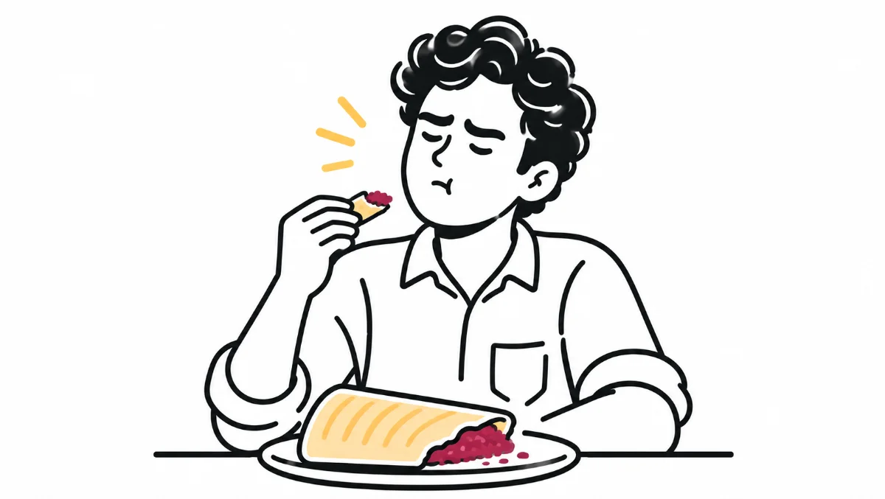

HeuristicsH4Consistency and Standards
Same dosa, every time
Users arrive with expectations built from every product they've ever used. When your design breaks those expectations, even creatively, they don't complain. They just leave. Consistency is not a constraint. It's how trust is built.

Welcome back to Week 4 of my 10-week series on Nielsen’s Usability Heuristics.
This week, we're diving into a principle we all think we understand, but often underestimate:
Consistency. Consistency. Consistency.
Heuristic #4: Consistency and Standards
Consistency Is Everywhere
Want to build your triceps? You've got to lift consistently.
Want to become a singer? You've got to practise consistently.
Want to succeed at anything? Consistency is the key.
Design is no different. To create great products, consistency isn't optional. It's critical.
The problem is that when we hear the word consistency in design, we often limit it to colours, icons, or layouts.
But it's much more than that. It applies to processes, methods, techniques, and so many other things.
Let's dig deeper.
A Dosa Story: When Creativity Breaks Consistency
Let's understand how consistency in user experience can influence whether users stay or leave.
I'm from South India, and like most of us here, I love dosas. Especially Masala Dosas: crispy crepes with a spicy potato filling inside.
No matter where you go, when you order a Masala Dosa, you expect it to taste a certain way. You already have a mental model of what a Masala Dosa should be.
But around seven years ago, a new restaurant opened in my area. Curious to try it, I went there and ordered a Masala Dosa.
Surprise.
The chef had added beetroot to the potato filling.
The dosa was pinkish, a little sweet, and definitely not what I was expecting.
Maybe some people liked it. But I didn't. I left after eating half of it and thought:
“This place isn't for me.”
Now, think about digital products. If users expect one thing but experience something completely different, they might not complain. They might simply never return.
Internal vs External Consistency
Consistency in design can be understood in two ways:
Internal Consistency
This is consistency within your own product.
For example, if your text links are light blue and show an underline on hover, that pattern should be followed across all pages.
If you suddenly start underlining all links by default on another page, it breaks the user's flow.
Internal consistency means your product speaks one clear language from start to finish.
External Consistency
This is where Jakob's Law comes in:
“People spend most of their time using digital products other than yours.”
Users bring habits and expectations from other platforms.
- Blue usually indicates a clickable link.
- A magnifying glass represents search.
- A shopping cart represents items added for purchase.
You can change these conventions, but you'll also make users stop and figure things out.
Creativity is great, but not at the cost of learnability.
And hey, isn't that dosa story a great example of external consistency?
Why Is Search Always a Magnifying Glass?
Let's keep it simple.
Why is the search icon a magnifying glass almost everywhere?
Why do e-commerce websites use a shopping cart icon?
Because users already recognise these symbols. They've seen them across different websites and apps, and they expect them to work in a familiar way.
And wait… isn't this also a callback to Heuristic #2: Match Between the System and the Real World?
You bet.
But let's get back to Heuristic #4: Don't make users learn something new when a standard already exists.
I'll repeat Jakob's Law here:
“People spend most of their time using digital products other than yours.”
So, design your product around the way users already think, not the way you want them to think.
Concluding Thought
A consistent experience doesn't limit creativity. It amplifies clarity.
Design for:
- Internal consistency → So your product feels unified.
- External consistency → So your product feels familiar.
That's how you build trust: one click, one screen, one dosa at a time.
Consistency isn't boring. It's smart UX.